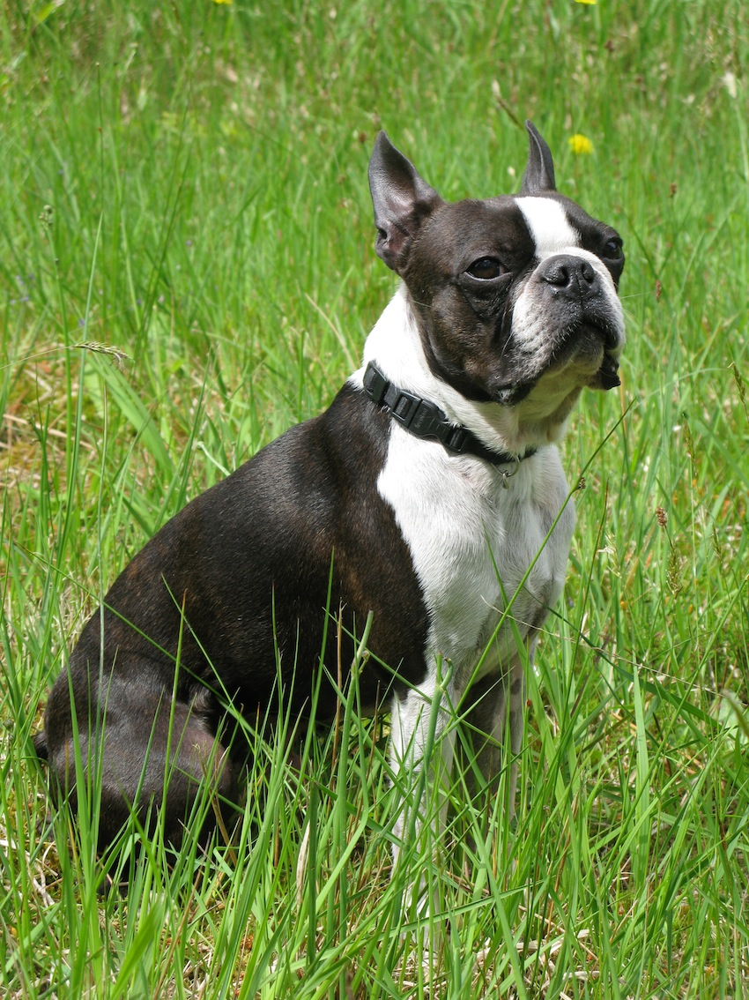

Once you've got the dog, what next? This page offers some resources for caring for your new Boston and making sure they're happy, healthy, and thriving, whether they're a puppy or a senior. This page focuses more on general care and training; please see the "Healthcare Resources" subpage for information specific to health.

The Boston Terrier Club of America once more has you covered, this time with an open-ended offer of education and answers to your questions, as well as a mentoring program.
You may have already checked out the AKC's breed page, but scroll down to "What To Expect When Caring For a Boston Terrier" and take a peek at the specifics in each area. The AKC breaks down your new Boston's needs in terms of grooming, nutrition, socialization, and more.
And check out these two additional sites with breed-specific guides to raising and training Bostons.